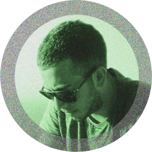

<section class="content about">
	<div class="main-text inner-center">
		<div class="about-img">
	  	
	  </div>
		<span>Hi,</span>
		my name is Kostas and I'm a software engineer at <a href="https://www.skroutz.gr">Skroutz.gr</a>.
		Besides my life as a developer I enjoy photography. I am self-taught and started my involvement with photography in 2012.
		I like urban and sub-urban landscapes which emit the feeling of loneliness, abandonment and curiosity.
		Nowadays I shoot mostly film because I don't have much time for post processing my digital images.
		<ul class="socials">
			<li><a href="https://github.com/{{ site.github }}" target="_blank"><i class="fa fa-github-square"></i></a></li>
			<li><a href="https://twitter.com/{{ site.twitter }}" target="_blank"><i class="fa fa-twitter-square"></i></a></li>
			<li><a href="https://www.flickr.com/photos/{{ site.flickr }}" target="_blank"><i class="fa fa-flickr"></i></a></li>
		</ul>
    <small>
      This site began as a fork of <a href="https://github.com/holman/left">holman/left</a>
      but <a href="http://vangeltzo.com/">Vangelis</a> took it to another
      level with his amazing design. If you want to get in touch, send me an
      <a href="https://www.google.com/recaptcha/mailhide/d?k=01i6PPCmYsIaZ_zZZh807C8A==&amp;c=XsmZydarIWkfn8y1tKP3aUvxXFAs2S-R1o_vMummuH0="
      onclick="window.open('http://www.google.com/recaptcha/mailhide/d?k\07501i6PPCmYsIaZ_zZZh807C8A\75\75\46c\75XsmZydarIWkfn8y1tKP3aUvxXFAs2S-R1o_vMummuH0\075',
       '', 'toolbar=0,scrollbars=0,location=0,statusbar=0,menubar=0,resizable=0,width=500,height=300'); return false;"
       title="Reveal this e-mail address">E-mail</a>
    </small>
	</div>
</section>
